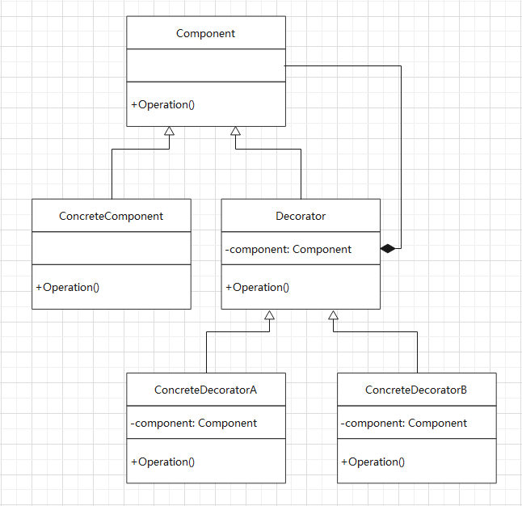

课程笔记：极客时间—设计模式之美
装饰器模式
解决的问题：装饰器模式主要解决继承关系过于复杂的问题，通过组合来代替继承。
主要的作用：给原始类添加增强功能。
案例讲解：通过剖析 Java IO 类的设计思想来学习装饰器模式
Java IO类库的部分继承关系：
- 字节流
InputStream（抽象类）PipedInputStreamFileInputStreamFilterInputStreamBufferedInputStreamDataInputStream
OutputStream（抽象类）
- 字符流
其中，FileInputStream 是专门用来读取文件流的子类。BufferedInputStream是一个支持带缓存功能的数据读取类，可以提高数据读取的效率。
考虑给 FileInputStream 扩展一个支持带缓存读取的功能，有两种设计方案：
基于继承的设计方案
添加一个继承
FileInputStream的子类BufferedFileInputStream来实现该功能。该方案的问题：假如我需要再给
PipedInputStream添加缓存功能，则需要再添加一个继承自PipedInputStream的子类BufferedPipedInputStream；另外，除了支持缓存读取之外，如果我们还需要对功能进行其他方面的增强，比如DataInputStream类（支持按照基本数据类型来读取数据），就需要再继续派生出DataFileInputStream、DataPipedInputStream等 n 多个子类。依此类推，如果需要附加更多的增强功能（假设有 m 个），那么就会导致组合爆炸（新增m x n个子类），类继承结构变得无比复杂，代码既不好扩展，也不好维护。基于装饰器模式的设计方案
简而言之，就是“使用组合来替代继承”。
这里给出了部分的代码实现结构：
public abstract class InputStream { public int read(byte b[]) throws IOException { return read(b, 0, b.length); } public long skip(long n) throws IOException { //... } } public class BufferedInputStream extends InputStream { protected volatile InputStream in; protected BufferedInputStream(InputStream in) { this.in = in; } // 实现基于缓存的读数据接口 } public class DataInputStream extends InputStream { protected volatile InputStream in; protected DataInputStream(InputStream in) { this.in = in; } // 实现基于读取基本类型数据的接口 }使用下面的代码，我们就可以分别创建一个支持缓存功能、和支持读取基本数据类型的读取文件流。
InputStream bin = new BufferedInputStream(new FileInputStream("/path/to/test.txt")); InputStream din = new DataInputStream(new FileInputStream("/path/to/test.txt"));如果总共需要添加 m 个附加功能，那我们只需要创建 m 个继承自
InputStream的子类即可。装饰器模式相对于简单的组合关系，还有两个比较特殊的地方。
第一个特殊的地方：装饰器类和原始类继承同样的父类，这样我们可以对原始类“嵌套”多个装饰器类。
比如，下面一段代码，通过对
FileInputStream嵌套了两个装饰器类，让它既支持缓存读取，又支持按照基本数据类型来读取数据。InputStream in = new FileInputStream("/path/to/test.txt"); InputStream bin = new BufferedInputStream(in); InputStream din = new DataInputStream(bin);不得不感叹这样的设计是真的优雅。
第二个特殊的地方：装饰器类是对功能的增强，这也是装饰器模式应用场景的一个重要特点。
这里我们通过对比装饰器模式和代理模式的设计差异来加深认识。
代理模式跟装饰器模式的代码结构很像，它们都是符合“组合关系”的设计。但是，它们的设计意图是不同的。
- 代理模式中，代理类附加的是跟原始类无关的功能；
- 装饰器模式中，装饰器类附加的是跟原始类相关的增强功能。
// 代理模式的代码结构（下面的接口可替换成抽象类） public interface IA { void f(); } public class A implements IA { public void f() {} } public class AProxy implements IA { private IA a; public AProxy(IA a) { this.a = a; } public void f() { // 新添加的代理逻辑 a.f(); // 新添加的代理逻辑 } } // 装饰器模式的代码结构（下面的接口可替换成抽象类） public interface IA { void f(); void f2(); } public class A implements IA { public void f() {} public void f2() {} } public class ADecorator implements IA { private IA a; public ADecorator(IA a) { this.a = a; } public void f() { // 功能增强代码 a.f(); // 功能增强代码 } public void f2() { a.f2(); } }
在装饰器模式中，即使对于不需要增强的函数来说，装饰器类还是必须把它重新实现一遍，简单包裹对被装饰类的函数调用。原因也很容易理解，装饰器类既然是对原始类功能的增强，那么原始类已有的功能就必须被继承下来。而这带来了一个问题，增加了重复代码。
聪明的你可能已经想到了解决方案：使用继承。这也是 Java IO 类的设计中，
BufferedInputStream并没有直接继承自InputStream，而是抽象出了一个装饰器父类FilterInputStream的原因所在。这样，装饰器类只需要实现它需要增强的方法就可以了，其他方法继承装饰器父类的默认实现。public class FilterInputStream extends InputStream { protected volatile InputStream in; protected FilterInputStream(InputStream in) { this.in = in; } public int read(byte b[]) throws IOException { return in.read(b); } public long skip(long n) throws IOException { return in.skip(n); } }
装饰器模式类图
